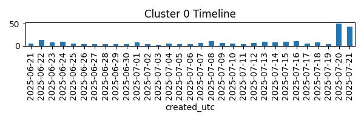
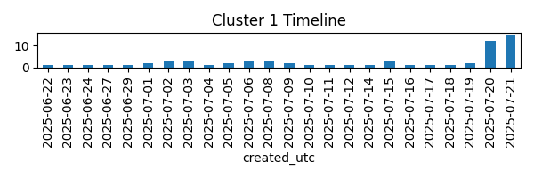

Cluster 0 [SUSPICIOUS]
Summary: Summary for cluster 0: 211 house republicans vote to block epstein files
aoc says trump's iran strikes 'clearly grounds for impeachment'
fbi agents were told to ‘flag’ any epstein records that mentioned trump, sen. durbin says
republicans block vote to release epstein files
mamdani says he doesn’t believe ‘that we should have billionaires’
Top keywords: bondi, epstein, iran, nuclear, pfizer, president, russia, says, trump, ukraine
Posts in cluster: 263
Top authors: Aggravating_Money992, According-Activity87, Silly-avocatoe
Sample posts:
- musk to trump: “wow, amazing that epstein ‘killed himself’ and ghislaine is in federal prison for a hoax”
- interesting marketing..
- treasury confirms spending up $142 billion in 2025
- is it becoming too obvious to ignore.
- president trump threatens to 'put a restriction' on commanders new stadium if team doesn't return to redskins nickname

Cluster 1 [SUSPICIOUS]
Summary: Summary for cluster 1: anti-immigration demonstrations take place in more than 80 cities across poland
britain waves the white flag to islamization and illegal immigration
britain built its last reservoir in 1992. since then poland has built six new reservoirs. britain built its last motorway in 2003. since then poland has added over 1,300km of new motorway. and each year per person, poland builds twice as many new homes as britain.
what is the social contract of modern britain?
let's be honest, £50k is no longer a decent salary
Top keywords: average, britain, country, government, just, pension, people, state, taxes, uk
Posts in cluster: 63
Top authors: ITMidget, Resident_Recent, insomnimax_99
Sample posts:
- uk asylum seekers caught entering ireland for double benefits
- farage repeats ‘no idea’ six times over reform mayor’s 600% allowance hike
- cannot leave reform uk
- lib dems complain to ofcom over 'undue prominence' bbc gave to reform
- gavin williamson: i have tabled an amendment to stop foreign nationals claiming pip. foreign nationals claim nearly £1bn per month in benefits. this will only worsen as those who arrived in the uk during the recent period of high immigration become eligible for ilr. this is not sustainable.
